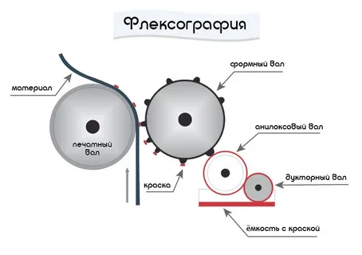

О чём эта статья:
Обычно про флексо пишут скучно: «ротационная машина, фотополимерная форма, анилоксовый вал…».
А давайте лучше про то, что флексография — это резиновая печать, которая сначала кормила Америку, потом спасла советскую пищевую промышленность, а сегодня делает пончики гламурными.

Прадедушка современной флексопечати — анилиновая печать.
В начале XX века в Германии придумали штамповать резиновые формы. Их делали… из вулканизированного каучука. А красили — анилиновыми чернилами (дешёвыми, яркими, но очень нестойкими).
Первые «флексографские» станки внешне напоминали огромные мясорубки. И печатали они… пакеты для клизм и грелок. Потому что резина штампуется легко, а текст на медицинских изделиях должен быть ярким и быстрым в производстве.
📌 Мораль: флексо родилась не в типографии, а в аптеке.
1930–1950-е. Америка. Расход упаковки бешеный. Молоко — в пакетах, хлеб — в целлофане, гамбургеры — в бумаге с логотипом.
И вот тут флексо сделала рывок: она умела печатать на рулонах, на плёнке, без остановки. Офсет требовал плотной бумаги, тигель — листов. А флексо — жми и режь.
Кстати, именно флексография напечатала первые культовые упаковки:
📌 Итог: поп-арт и массовое потребление состоялись во многом благодаря резиновым валам.
Долгое время в Союзе печатали в основном офсетом и высокой печатью. Но была проблема: нечем было красить полиэтилен.
Пакет «майка», обёртка для мороженого, гибкая упаковка для круп — офсет по плёнке скользит, краска осыпается.
И тут в 1970-х инженеры вспомнили про старую резиновую технологию. Наладили выпуск форм из фотополимера — и дело пошло.
Легенда гласит, что первую промышленную флексомашину в СССР настраивали по инструкции на немецком, а переводил инженер-химик, который немецкий учил по учебникам 19 века. Но станок заработал. И пакеты с синими буквами «Молоко» поехали в магазины.
В 1952 году в США прошёл съезд печатников. Термин «анилиновая печать» вызывал ассоциации с дешёвкой и плохим качеством. Решили переименовать в flexography — от латинского flexus (гибкий) и греческого grapho (писать).
То есть «гибкое письмо». Имелась в виду гибкая форма.
Но сейчас это слово обрело второй смысл: гибкость технологии. На одном станке можно печатать этикетки, пакеты, гофротару, стрейч-плёнку, трубы для зубной пасты, стаканчики, обои и даже медицинские маски.
📌 Диапазон: от плёнки толщиной 12 микрон до гофролиста толщиной 10 мм.
Реальная история с нашего производства.
К нам обратилась небольшая, но амбициозная сыроварня. Заказали этикетки для премиальных сыров с выдержкой. Дизайн — крафт, благородный шрифт, всё очень европейско-деревенское.
Но с изюминкой.
Заказчик попросил нанести ароматизированный лак с запахом сливочного масла и сыра. Такое иногда делают для фермерских продуктов — чтобы покупатель открыл коробку и сразу «услышал» вкус. Дорого, эффектно, работает.
Мы напечатали. Отгрузили. Сыроварня счастлива.
Проходит неделя.
На ту же машину заходит новый заказ — крупная сеть пекарен. Им нужны этикетки для круассанов, слоек и бриошей. Тираж большой, срочный. Макет свежий, бумага хрустящая, всё красиво.
Печатаем. Режем. Пакуем. Отгружаем.
Через два дня — звонок.
— Вы чем печатали наши этикетки?!
— Эм… стандартные пищевые краски, УФ-лак…
— Откройте коробку! Это же масло! Точнее, сыр!
— ???
Оказалось, ароматизированный лак с сыроварни впитался в резиновые валы и дукторы. Его остатки микроскопическими дозами переносились на новые этикетки. Невидимо глазу — но не носу.
Каждая этикетка для круассанов пахла выдержанным чеддером.
Фасовщицы в пекарне сначала смеялись. Потом пришли покупатели. Одна дама спросила: «Это новая линейка — сырные круассаны? А почему в названии не указано?»
Пришлось срочно перепечатывать тираж.
А станок мыли четыре часа.
📌 Урок: Флексография — это техника с памятью. Она помнит, что печатала до тебя. И если вчера здесь пахло французским сыром — не удивляйтесь, что сегодня ваша выпечка приобрела пикантный оттенок.
А вот история про обратную сторону флексо — про пользу, красоту и коммерческий успех.
К нам пришёл производитель пончиков. Сеть кофеен, свежая выпечка, демократичные цены. Упаковка — обычные крафтовые коробки под пончики. Симпатично, но… незаметно.
На полке рядом стояли конкуренты с глянцевыми коробками, с блёстками, с золотом. Наши пончики терялись.
Заказчик сказал: «Хотим выделяться. Но переделывать дизайн всей коробки — долго и дорого. Что делать?»
Мы предложили гениальное в своей простоте решение:
Дополнительная этикетка.
Печатаем на флексе яркую, сочную, гламурную наклейку — с золотым тиснением, глянцевым лаком, аппетитными каплями «глазури». И клеим её сверху на коробку.
Не перепечатка всей партии. Не смена материала. Просто этикетка сверху.
Результат:
Коробка перестала быть крафтовой «зеленой» коробкой. Она стала премиум-позицией на полке. Гламурная этикетка работала как ценник, как магнит, как визуальный крик: «Возьми меня, я вкуснее!»
Через месяц заказчик отчитался: продажи выросли на 30%. А всё потому, что мы не стали менять коробку. Мы просто добавили к ней флексопечать.
📌 Урок: Гламурность у нас любят. И платят за неё. Флексография — это не только про тиражи. Это про взгляд покупателя за 0,3 секунды.
У каждой технологии есть свои нюансы. Мы в ООО «ИПК Лазурь» знаем их все.
Печатаем:
Рулонная печать, листовая, послепечатная отделка, ароматизированные лаки (теперь — осторожно 😊), тиснение, конгрев, выборочный УФ-лак — всё под одной крышей.
📬 Приходите с макетом. Разберёмся.
И обещаем: ваши круассаны будут пахнуть только круассанами, а ваши пончики — сиять на полке так, что конкуренты обзавидуются.
ООО «ИПК Лазурь»
Печатаем с душой. Даже когда пахнет сыром.